Takashi Aka Takki des Innamorati
RobeMâle · Blue point
StatutAdopté
Album13 photos, de mai 2022 à janvier 2025

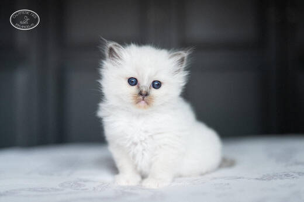

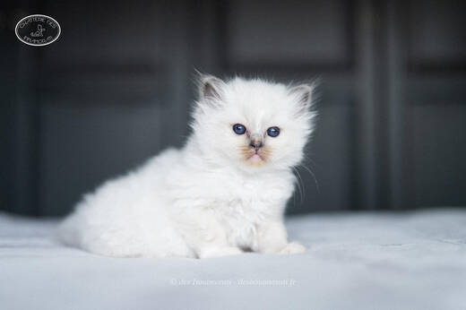

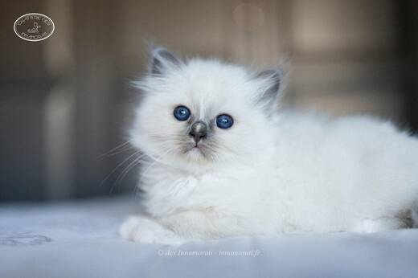

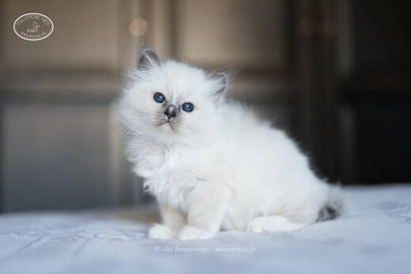

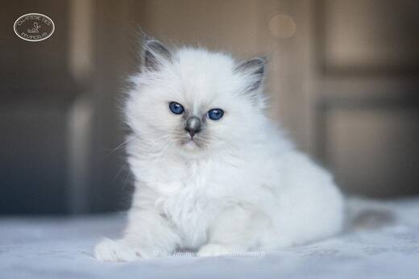

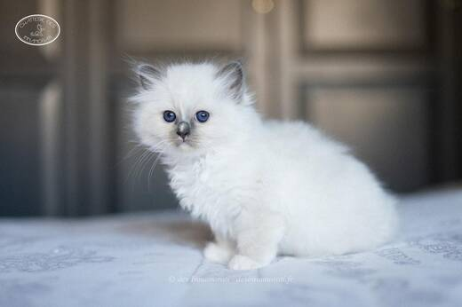

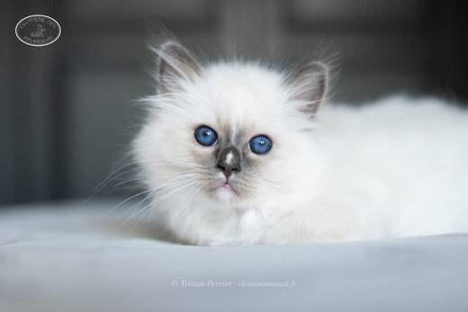

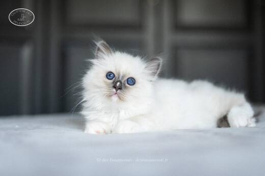

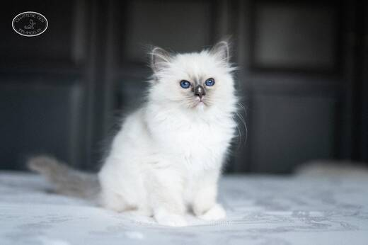

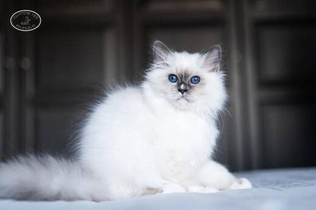


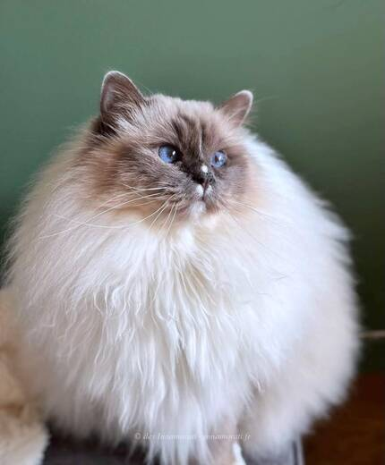

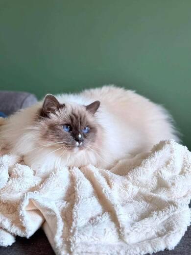
Photos réduites et marquées. Elles appartiennent à la Chatterie des Innamorati et ne peuvent pas être reprises dans une annonce.